CMP04 — Old vs New Tax Regime: Aapke liye Kaunsa Sasta Padega?
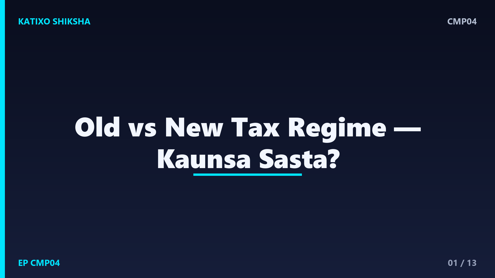
Slide 1दोस्तों, हर साल income tax भरते वक़्त एक उलझन ज़रूर आती है — old tax regime चुनूँ या new tax regime? एक में छूट यानी deductions मिलती हैं, दूसरे में slab कम हैं पर छूट नहीं। और गलत चुनाव में हज़ारों रुपये ज़्यादा tax जा सकता है। Katixo KhojLab की इस comparison episode में हम दोनों regime को आसान भाषा में समझेंगे, फ़र्क़ देखेंगे एक असली example से, और बताएँगे किसके लिए कौन सा सही रहता है। ध्यान दें — ये general info है, financial advice नहीं, और tax नियम हर साल बदल सकते हैं।
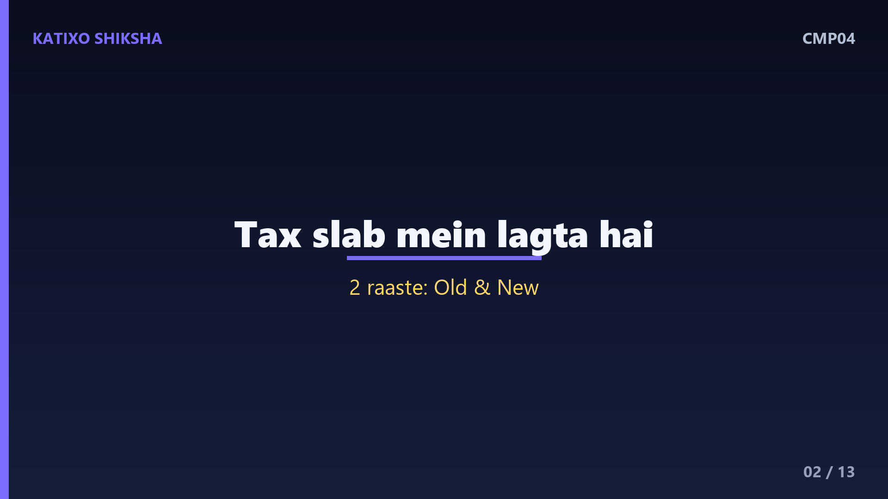
Slide 2पहले बुनियादी बात — income tax होता क्या है. जब आपकी सालाना कमाई एक तय सीमा से ज़्यादा होती है, तो सरकार उस पर tax लेती है। ये tax slab यानी हिस्सों में लगता है — जितनी ज़्यादा कमाई, उतनी ऊँची दर। पर सरकार दो रास्ते देती है इसे कम करने के — एक पुराना तरीक़ा जिसे old regime कहते हैं, और एक नया तरीक़ा जिसे new regime कहते हैं। दोनों का फ़र्क़ सिर्फ़ इतना है कि tax slab क्या हैं और कौन सी छूट मिलती है। चलो दोनों समझते हैं।
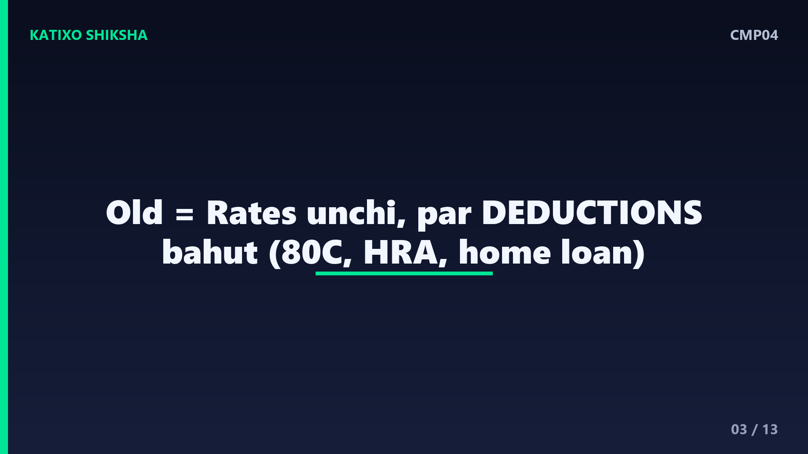
Slide 3अब old tax regime समझो. ये पुराना और जाना-पहचाना तरीक़ा है। इसमें tax की दरें थोड़ी ऊँची होती हैं, पर इसके बदले आपको ढेर सारी छूट यानी deductions मिलती हैं। जैसे — section 80C के तहत PPF, life insurance, बच्चों की tuition fee, EPF वग़ैरह में किया गया निवेश, घर के home loan का ब्याज, health insurance का premium, और HRA यानी house rent allowance। इन सब को मिलाकर आपकी taxable income काफ़ी घट जाती है, और tax कम हो जाता है। यानी जो लोग ख़ूब निवेश और खर्च की छूट लेते हैं, उनके लिए ये फ़ायदेमंद है।
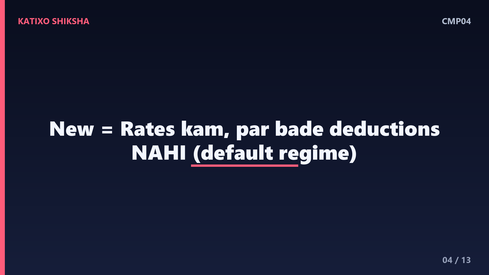
Slide 4अब new tax regime. ये नया तरीक़ा है, जिसे सरकार आजकल default बनाकर बढ़ावा दे रही है। इसमें tax की दरें कम और slab ज़्यादा होते हैं, यानी ऊपर से देखने पर tax कम लगता है। पर इसमें एक शर्त है — old regime वाली ज़्यादातर बड़ी छूट इसमें नहीं मिलतीं, जैसे 80C का निवेश या HRA। हालाँकि इसमें एक standard deduction और कुछ छोटी राहतें मिल जाती हैं। यानी new regime आसान है, हिसाब-किताब कम है, पर निवेश की छूट का फ़ायदा नहीं ले सकते।
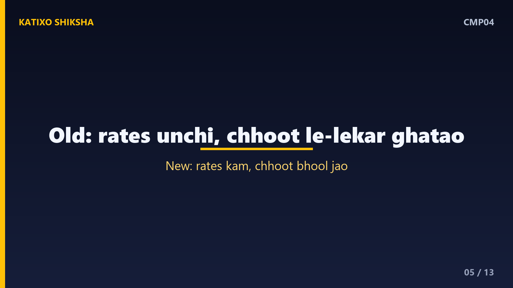
Slide 5अब सबसे ज़रूरी फ़र्क़ एक लाइन में. Old regime कहता है — दरें ऊँची, पर छूट ले-लेकर tax घटाओ। New regime कहता है — दरें कम, पर छूट भूल जाओ। तो जवाब इस बात पर निर्भर करता है — आप कितनी छूट का इस्तेमाल कर पाते हो। अगर आप home loan, 80C, HRA जैसी कई छूट लेते हो, तो old सस्ता पड़ सकता है। और अगर आप ज़्यादा निवेश नहीं करते या छूट कम है, तो new regime की कम दरें फ़ायदेमंद रहती हैं। यही पूरी समझ का निचोड़ है।
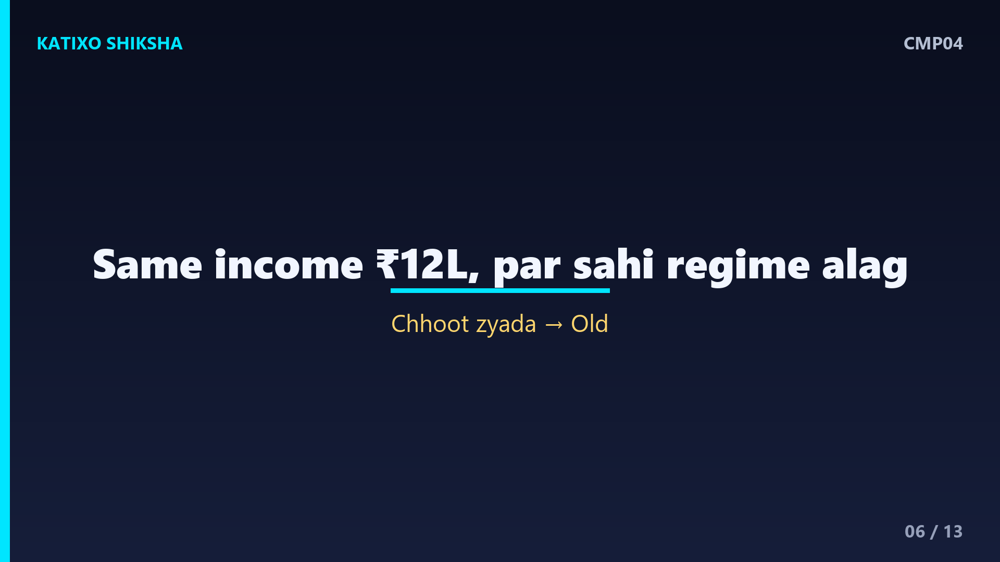
Slide 6अब एक असली example से समझते हैं. मान लो रोहित की सालाना कमाई बारह लाख रुपये है। पहला case — रोहित ज़्यादा निवेश नहीं करता, कोई home loan नहीं, छूट ना के बराबर। ऐसे में new regime की कम दरें उसके लिए अक्सर सस्ती पड़ेंगी। दूसरा case — रोहित 80C में पूरा निवेश करता है, home loan का ब्याज भी देता है, HRA भी मिलता है। अब उसकी छूट इतनी बड़ी हो जाती है कि old regime उसके लिए सस्ता पड़ सकता है। यानी एक ही income, पर सही regime अलग।
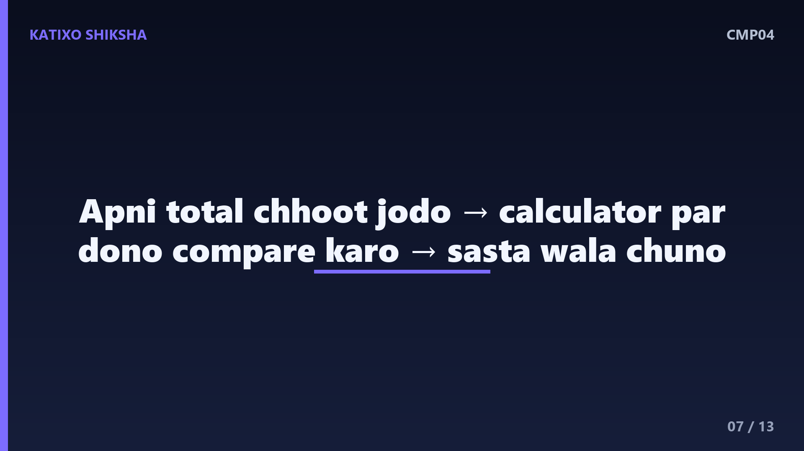
Slide 7तो कैसे पक्का करें कौन सा सस्ता? तरीक़ा बहुत आसान है. अपनी कुल छूट जोड़ो — 80C, home loan ब्याज, HRA, health insurance, सब। अब अंदाज़ा लगाओ — दोनों regime में आपका tax कितना बनेगा। ज़्यादातर tax websites और सरकारी income tax portal पर एक मुफ़्त tax calculator होता है, जहाँ आप दोनों का tax एक मिनट में compare कर सकते हो। जिसमें tax कम बने, वही चुनो। बस एक बार का हिसाब आपके हज़ारों रुपये बचा सकता है। अंदाज़े से कभी मत चुनो।
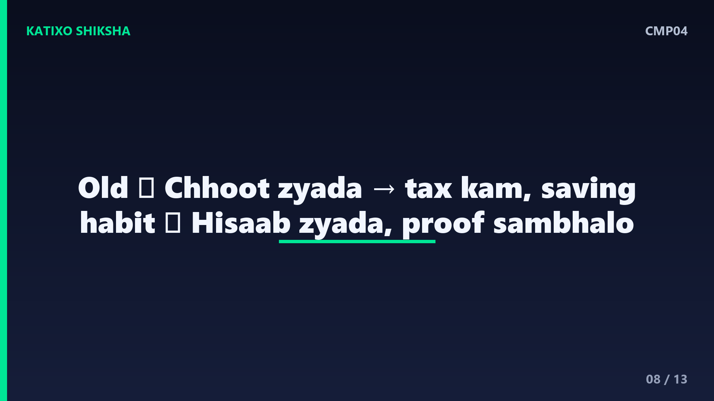
Slide 8अब old regime के फ़ायदे और नुक़सान. फ़ायदे — अगर आपकी छूट ज़्यादा हैं, तो tax काफ़ी कम हो सकता है, और ये आपको निवेश और बचत करने के लिए प्रेरित करता है, जैसे PPF या insurance। नुक़सान — हिसाब-किताब ज़्यादा, सारे documents और proof संभालने पड़ते हैं, और tax बचाने के चक्कर में कई बार लोग ग़ैरज़रूरी जगह पैसा फँसा देते हैं। तो old regime उन्हीं के लिए अच्छा है जो वाक़ई बड़ी और असली छूट का इस्तेमाल करते हैं।
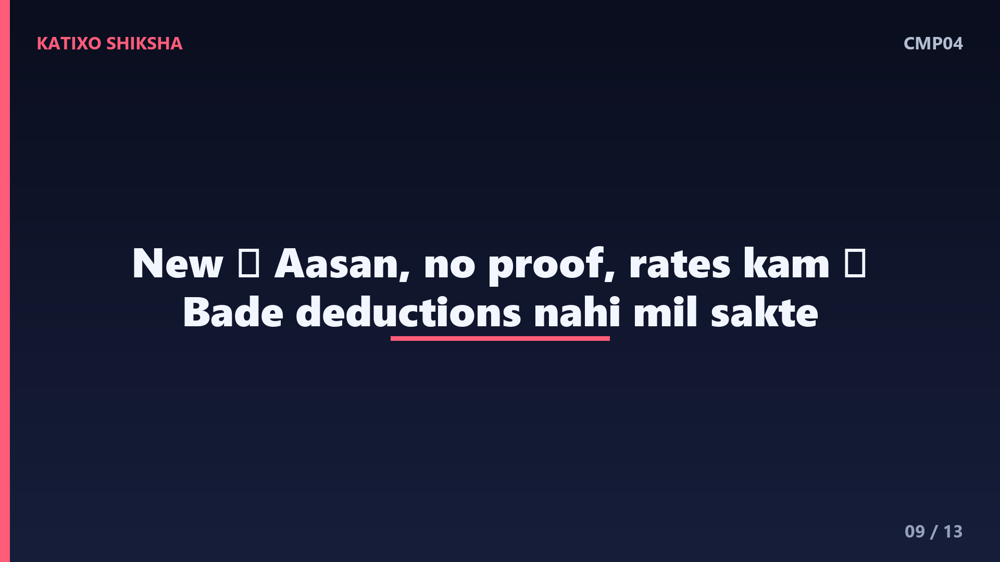
Slide 9अब new regime के फ़ायदे और नुक़सान. फ़ायदे — बहुत आसान, कोई proof या document संभालने का झंझट नहीं, दरें कम, और बिना किसी मजबूरी के पैसा जहाँ चाहो वहाँ लगाओ। ये उन युवाओं और लोगों के लिए बढ़िया है जिनकी छूट कम है। नुक़सान — आप बड़ी deductions का फ़ायदा नहीं ले सकते, तो अगर आपके पास home loan और बड़े निवेश हैं, तो new regime में आप ज़्यादा tax दे सकते हो। यानी आसानी के बदले कुछ छूट छोड़नी पड़ती है।
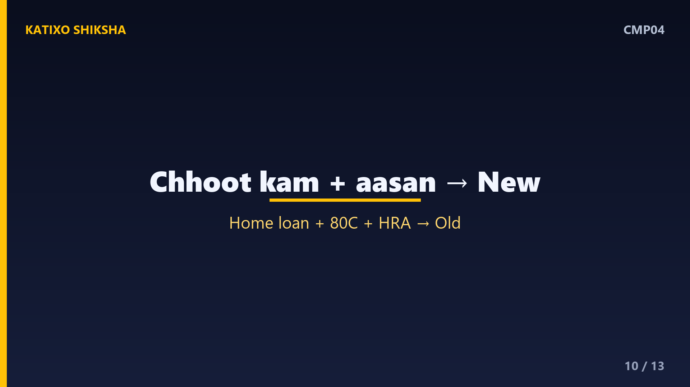
Slide 10तो किसके लिए क्या सही? New regime सही लगता है — उनके लिए जो ज़्यादा निवेश नहीं करते, किराए पर नहीं रहते या HRA नहीं लेते, home loan नहीं है, और झंझट-मुक्त आसान हिसाब चाहते हैं। Old regime सही लगता है — उनके लिए जिनके पास home loan है, जो 80C पूरा भरते हैं, HRA लेते हैं, और जिनकी कुल छूट बड़ी बन जाती है। पर ये कोई पक्का नियम नहीं — हर किसी का हिसाब अलग है, इसलिए calculator से जाँचना सबसे भरोसेमंद तरीक़ा है।
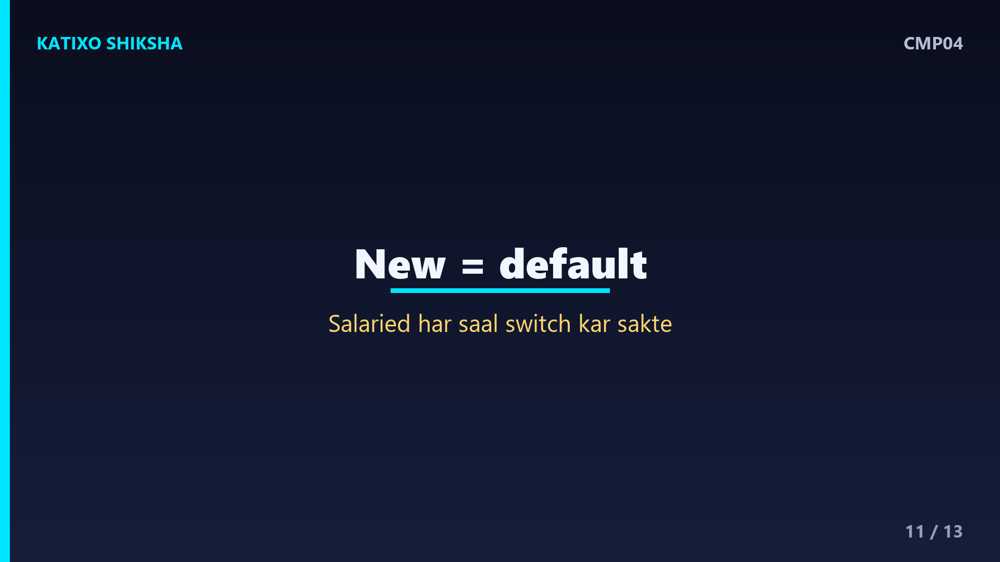
Slide 11कुछ ज़रूरी बातें ध्यान रखो. एक — new regime अब आम तौर पर default होता है, यानी अगर आप कुछ नहीं चुनते, तो वही लागू हो जाता है, इसलिए सोच-समझकर select करो। दो — नौकरी वाले लोग आम तौर पर हर साल regime बदल सकते हैं, तो इस साल जो सस्ता हो वो चुनो। तीन — tax slab, दरें और छूट सरकार हर बजट में बदल सकती है, इसलिए हर साल नए नियम से दोबारा compare करना ज़रूरी है। पुराने हिसाब पर आँख मूँदकर भरोसा मत करो।
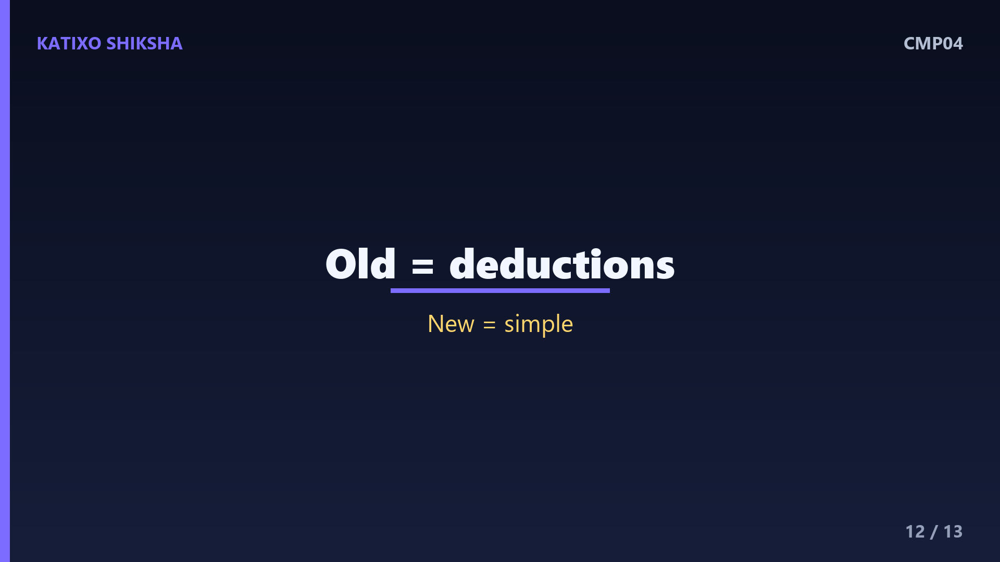
Slide 12एक quick recap. Old regime — दरें ऊँची पर बहुत सारी छूट, उनके लिए अच्छा जिनकी deductions बड़ी हैं। New regime — दरें कम पर छूट नहीं, उनके लिए अच्छा जिनकी छूट कम और जो आसानी चाहते हैं। सही चुनाव सिर्फ़ इस बात पर है — आपकी कुल छूट कितनी है। इसलिए हर साल दोनों का tax calculator पर compare करो और जो सस्ता हो वही चुनो। याद रखो — ये general info है, और tax नियम बदलते रहते हैं।
Slide 13तो दोस्तों, अब old और new tax regime का पूरा फ़र्क़ साफ़ है, और इस बार return भरते वक़्त आप अंदाज़े से नहीं, हिसाब से फ़ैसला करोगे। याद रखो — कोई regime हर किसी के लिए best नहीं, सही वही है जो आपकी situation में कम tax ले। अगर ये comparison काम आया तो Katixo KhojLab subscribe karein, घंटी दबाएँ, और परिवार-दोस्तों के साथ share करें। और एक बार फिर — ये general info है, financial advice नहीं, ज़रूरत हो तो किसी CA या tax expert से सलाह ज़रूर लें। मिलते हैं अगली episode में।